# A tibble: 3 × 29
Model Status Note AUC AUC_Lower AUC_Upper Brier Brier_Lower Brier_Upper
<chr> <chr> <chr> <dbl> <dbl> <dbl> <dbl> <dbl> <dbl>
1 Biomarker ok "" 0.796 0.729 0.863 0.156 0.132 0.184
2 Covariat… ok "" 0.524 0.440 0.608 0.207 0.184 0.230
3 Adjusted ok "" 0.798 0.730 0.865 0.156 0.132 0.184
# ℹ 20 more variables: CalibrationIntercept <dbl>, CalibrationSlope <dbl>,
# ObservedExpectedRatio <dbl>, R2 <dbl>, AdjustedR2 <dbl>, R2_Lower <dbl>,
# R2_Upper <dbl>, RMSE <dbl>, RMSE_Lower <dbl>, RMSE_Upper <dbl>, MAE <dbl>,
# MAE_Lower <dbl>, MAE_Upper <dbl>, DeltaAUC_vs_Covariates <dbl>,
# DeltaR2_vs_Covariates <dbl>, N <int>, NPositive <int>, NNegative <int>,
# NMissing <int>, Prevalence <dbl>Overview
This vignette uses the bundled SampleData to illustrate a realistic candidate-biomarker workflow: separating participants with Impaired versus Control diagnosis. It is a teaching dataset, not a validated diagnostic study. The examples show apparent performance in this dataset and should not be used as clinical cutoffs or estimates expected to transport unchanged to another cohort.
Performance is multidimensional. AUC describes discrimination, Brier score describes probability accuracy, calibration asks whether predicted and observed risk agree, and delta AUC asks whether a biomarker adds information beyond the baseline covariate model.
Load packages
Load and revalue the bundled data
Note
The data file being used is
SampleDatafrom SciDataReportR.The codebook being used is
SampleVariableTypesfrom SciDataReportR.
Diagnosis has two observed levels here: Control and Impaired. Every binary example below explicitly treats Impaired as the positive outcome, so the scientific interpretation cannot silently flip with factor order.
Amyloid beta 42 as a candidate biomarker
Amyloid beta 42 is a useful first candidate in this teaching dataset. We adjust for age because age can itself discriminate diagnostic groups and may account for part of the biomarker-outcome association.
Read the three rows together: Biomarker is amyloid beta 42 alone, Covariates is the age-only baseline, and Adjusted combines both. The AUC and Brier score describe different aspects of performance. A coefficient or AUC that looks promising does not alone establish clinical value.
# A tibble: 3 × 27
Source Model Threshold ThresholdScale Direction Sensitivity Sensitivity_Lower
<chr> <chr> <dbl> <chr> <chr> <dbl> <dbl>
1 Model … Biom… 0.341 Predicted pro… >= 0.742 0.620
2 Model … Cova… 0.291 Predicted pro… >= 0.621 0.493
3 Model … Adju… 0.414 Predicted pro… >= 0.667 0.540
# ℹ 20 more variables: Sensitivity_Upper <dbl>, Specificity <dbl>,
# Specificity_Lower <dbl>, Specificity_Upper <dbl>, PPV <dbl>,
# PPV_Lower <dbl>, PPV_Upper <dbl>, NPV <dbl>, NPV_Lower <dbl>,
# NPV_Upper <dbl>, LRPositive <dbl>, LRPositive_Lower <dbl>,
# LRPositive_Upper <dbl>, LRNegative <dbl>, LRNegative_Lower <dbl>,
# LRNegative_Upper <dbl>, TP <int>, FP <int>, TN <int>, FN <int>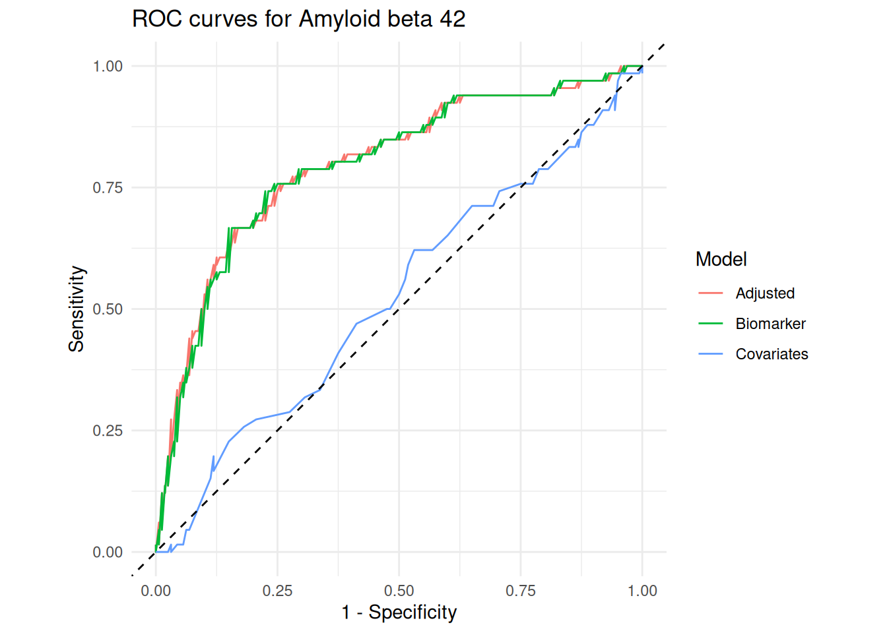
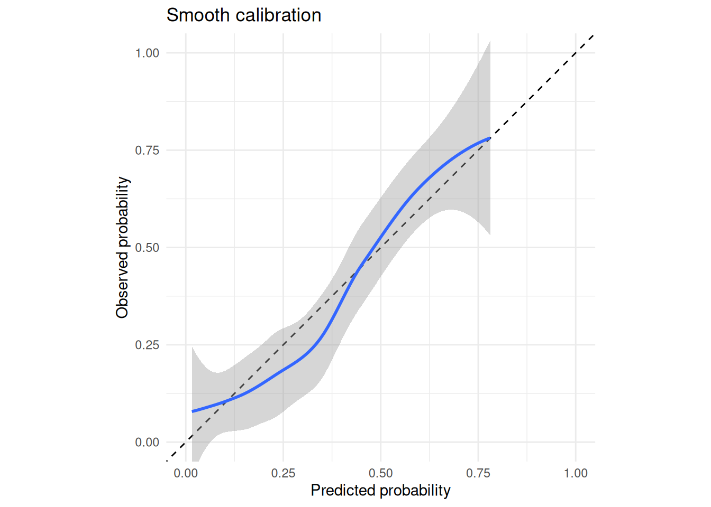
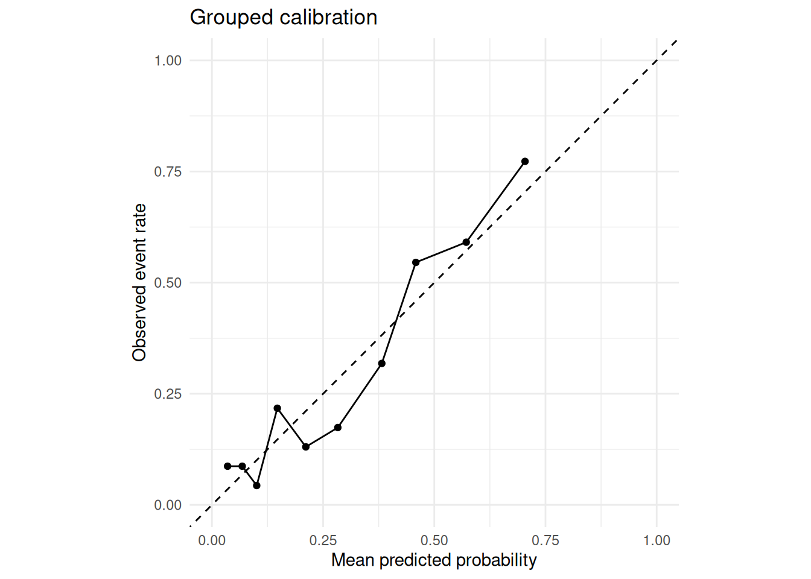
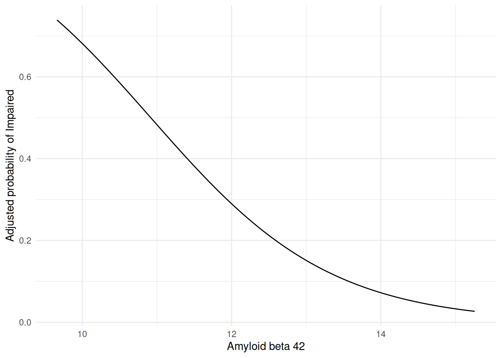
The raw threshold is expressed in amyloid beta 42 units; model-probability thresholds are on a different scale. Sensitivity and specificity depend on the selected threshold. PPV and NPV also depend on the prevalence in this dataset, so they should not be assumed to apply to another setting. The probability curve uses marginal standardization: each participant retains their observed age while amyloid beta 42 is varied, then predicted probabilities are averaged.
Compare several candidate proteins
In practice, the question is often comparative: does amyloid beta 42 outperform tau, phosphorylated tau, serum amyloid P, or a weak comparator such as AXL?
# A tibble: 5 × 40
Outcome OutcomeLabel OutcomeType PositiveLevel Biomarker BiomarkerLabel
<chr> <chr> <chr> <chr> <chr> <chr>
1 Diagnosis Diagnosis binary Impaired Ab_42 Amyloid beta …
2 Diagnosis Diagnosis binary Impaired tau Tau protein
3 Diagnosis Diagnosis binary Impaired p_tau Phosphorylate…
4 Diagnosis Diagnosis binary Impaired Serum_Amyloid… Serum amyloid…
5 Diagnosis Diagnosis binary Impaired AXL AXL receptor …
# ℹ 34 more variables: BiomarkerType <chr>, N <int>, NPositive <int>,
# NNegative <int>, NMissing <int>, Prevalence <dbl>, AUC <dbl>,
# AUC_Lower <dbl>, AUC_Upper <dbl>, CovariateAUC <dbl>, AdjustedAUC <dbl>,
# AdjustedAUC_Lower <dbl>, AdjustedAUC_Upper <dbl>, DeltaAUC <dbl>,
# Brier <dbl>, Brier_Lower <dbl>, Brier_Upper <dbl>,
# CalibrationIntercept <dbl>, CalibrationSlope <dbl>,
# ObservedExpectedRatio <dbl>, R2 <dbl>, R2_Lower <dbl>, R2_Upper <dbl>, …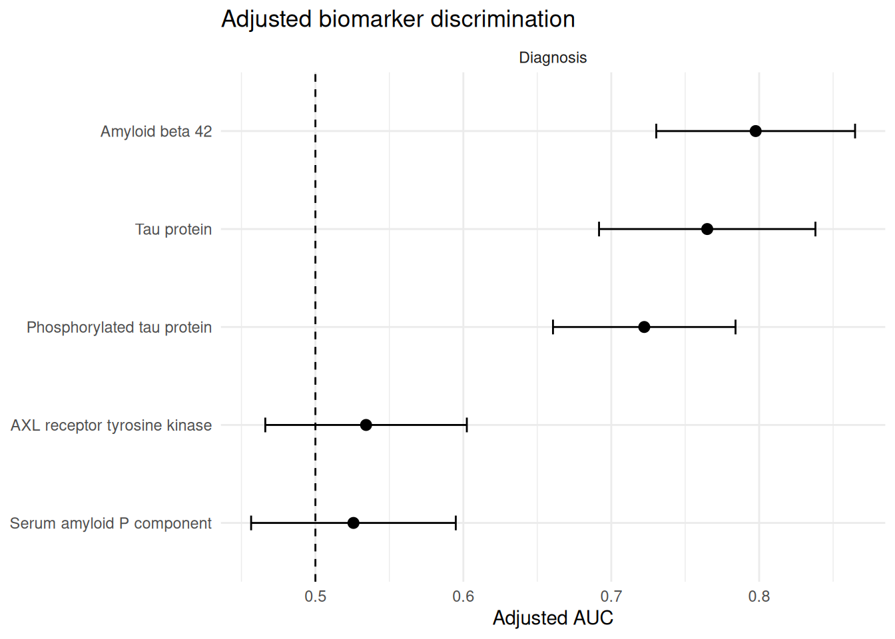
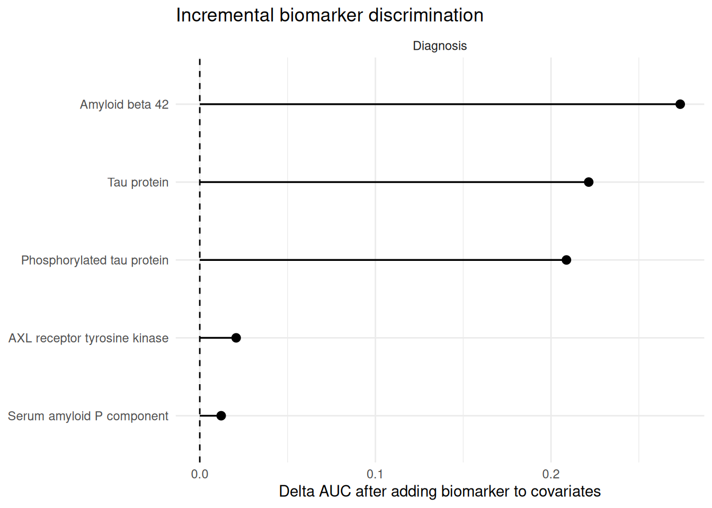
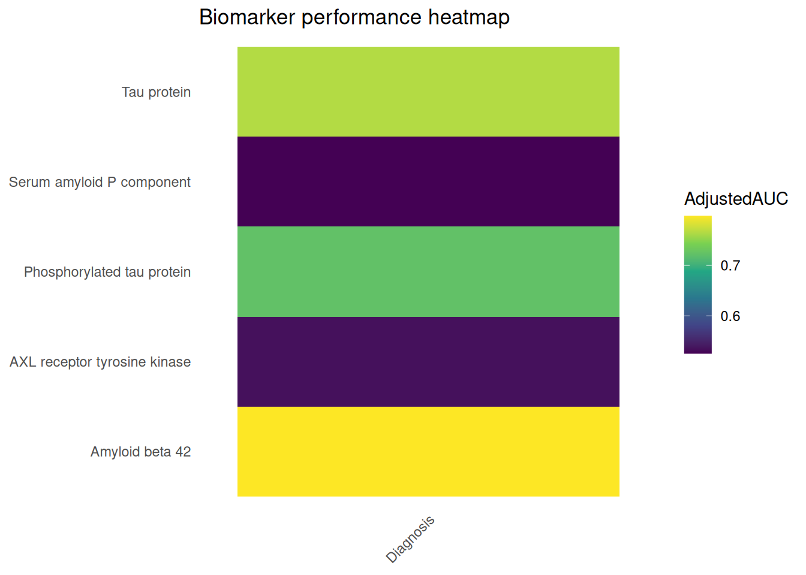
These screen-level plots provide a compact ranking. Each row has its own N because analyses use the complete observations available for that biomarker, outcome, and age. Compare AUC confidence intervals and missingness before over-interpreting small differences.
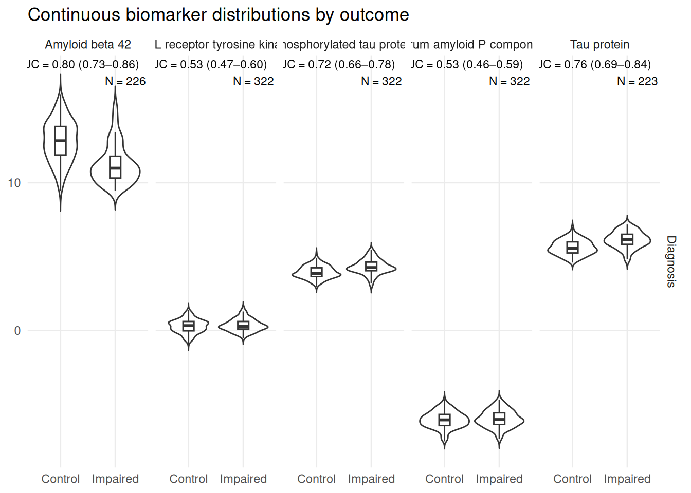
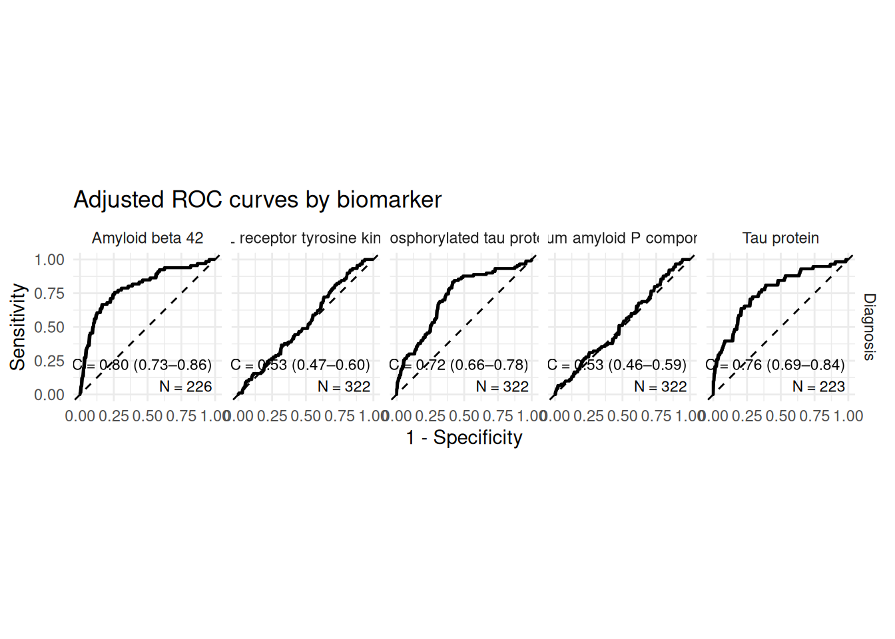
The distribution panels are visual QC: they show the raw biomarker values in each diagnostic group and annotate the adjusted AUC, confidence interval, and pair-specific N. The ROC facets show adjusted discrimination for the same candidate set. Neither plot turns a screen into external validation.
Multicategory categorical predictor: genotype
Genotype is a multicategory categorical predictor. It is evaluated through the fitted model and predicted probabilities at each genotype level. A single raw diagnostic cutoff would not make scientific sense, so it is intentionally absent.
NULL# A tibble: 3 × 29
Model Status Note AUC AUC_Lower AUC_Upper Brier Brier_Lower Brier_Upper
<chr> <chr> <chr> <dbl> <dbl> <dbl> <dbl> <dbl> <dbl>
1 Biomarker ok "" 0.635 0.572 0.699 0.188 0.167 0.212
2 Covariat… ok "" 0.514 0.442 0.585 0.201 0.181 0.223
3 Adjusted ok "" 0.638 0.566 0.709 0.188 0.166 0.211
# ℹ 20 more variables: CalibrationIntercept <dbl>, CalibrationSlope <dbl>,
# ObservedExpectedRatio <dbl>, R2 <dbl>, AdjustedR2 <dbl>, R2_Lower <dbl>,
# R2_Upper <dbl>, RMSE <dbl>, RMSE_Lower <dbl>, RMSE_Upper <dbl>, MAE <dbl>,
# MAE_Lower <dbl>, MAE_Upper <dbl>, DeltaAUC_vs_Covariates <dbl>,
# DeltaR2_vs_Covariates <dbl>, N <int>, NPositive <int>, NNegative <int>,
# NMissing <int>, Prevalence <dbl>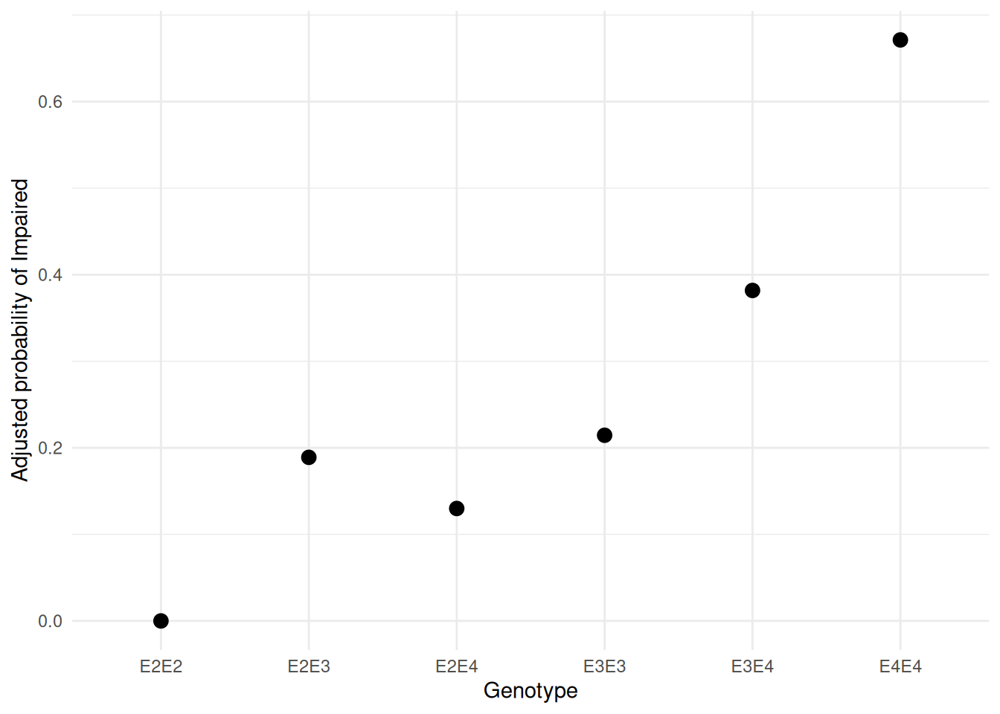
Continuous-outcome appendix
SampleData does not contain a credible continuous clinical endpoint. This small simulated appendix exists only to demonstrate the continuous-outcome API; the main workflow above remains entirely based on bundled sample data.
# A tibble: 3 × 29
Model Status Note AUC AUC_Lower AUC_Upper Brier Brier_Lower Brier_Upper
<chr> <chr> <chr> <dbl> <dbl> <dbl> <dbl> <dbl> <dbl>
1 Biomarker ok "" NA NA NA NA NA NA
2 Covariat… ok "" NA NA NA NA NA NA
3 Adjusted ok "" NA NA NA NA NA NA
# ℹ 20 more variables: CalibrationIntercept <dbl>, CalibrationSlope <dbl>,
# ObservedExpectedRatio <dbl>, R2 <dbl>, AdjustedR2 <dbl>, R2_Lower <dbl>,
# R2_Upper <dbl>, RMSE <dbl>, RMSE_Lower <dbl>, RMSE_Upper <dbl>, MAE <dbl>,
# MAE_Lower <dbl>, MAE_Upper <dbl>, DeltaAUC_vs_Covariates <dbl>,
# DeltaR2_vs_Covariates <dbl>, N <int>, NPositive <int>, NNegative <int>,
# NMissing <int>, Prevalence <dbl>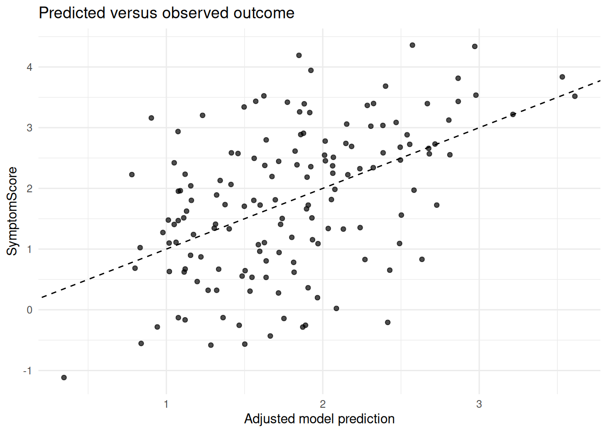
Continuous outcomes use R-squared, adjusted R-squared, incremental R-squared, RMSE, and MAE. ROC and classification metrics are intentionally not calculated.
Internal validation
Apparent performance is evaluated in the same data used to fit the model and can be optimistic. Cross-validation uses out-of-fold predictions; bootstrap output is labelled optimism-corrected. Internal validation is still not external validation in a new population.
Reproducibility
R version 4.6.1 (2026-06-24)
Platform: x86_64-pc-linux-gnu
Running under: Ubuntu 24.04.4 LTS
Matrix products: default
BLAS: /usr/lib/x86_64-linux-gnu/openblas-pthread/libblas.so.3
LAPACK: /usr/lib/x86_64-linux-gnu/openblas-pthread/libopenblasp-r0.3.26.so; LAPACK version 3.12.0
locale:
[1] LC_CTYPE=C.UTF-8 LC_NUMERIC=C LC_TIME=C.UTF-8
[4] LC_COLLATE=C.UTF-8 LC_MONETARY=C.UTF-8 LC_MESSAGES=C.UTF-8
[7] LC_PAPER=C.UTF-8 LC_NAME=C LC_ADDRESS=C
[10] LC_TELEPHONE=C LC_MEASUREMENT=C.UTF-8 LC_IDENTIFICATION=C
time zone: UTC
tzcode source: system (glibc)
attached base packages:
[1] stats graphics grDevices utils datasets methods base
other attached packages:
[1] plotly_4.12.1 ggplot2_4.0.3 dplyr_1.2.1
[4] SciDataReportR_20.24.0
loaded via a namespace (and not attached):
[1] gtable_0.3.6 xfun_0.60 bayestestR_0.18.1
[4] htmlwidgets_1.6.4 insight_1.5.2 rstatix_1.1.0
[7] lattice_0.22-9 paletteer_1.7.0 crosstalk_1.2.2
[10] vctrs_0.7.3 tools_4.6.1 generics_0.1.4
[13] datawizard_1.3.1 tibble_3.3.1 pkgconfig_2.0.3
[16] Matrix_1.7-5 data.table_1.18.4 RColorBrewer_1.1-3
[19] correlation_0.8.8 S7_0.2.2 RcppParallel_6.2.0
[22] lifecycle_1.0.5 compiler_4.6.1 farver_2.1.2
[25] snakecase_0.11.1 carData_3.0-6 htmltools_0.5.9
[28] yaml_2.3.12 Formula_1.2-6 pillar_1.11.1
[31] car_3.1-5 tidyr_1.3.2 statsExpressions_2.0.0
[34] abind_1.4-8 nlme_3.1-169 tidyselect_1.2.1
[37] sjlabelled_1.2.0 digest_0.6.39 mvtnorm_1.4-2
[40] gtsummary_2.5.1 purrr_1.2.2 rematch2_2.1.2
[43] splines_4.6.1 labeling_0.4.3 forcats_1.0.1
[46] ggstatsplot_1.0.0 labelled_2.16.0 fastmap_1.2.0
[49] grid_4.6.1 cli_3.6.6 magrittr_2.0.5
[52] patchwork_1.3.2 utf8_1.2.6 dichromat_2.0-1
[55] broom_1.0.13 withr_3.0.3 scales_1.4.0
[58] backports_1.5.1 estimability_2.0.0 httr_1.4.8
[61] rmarkdown_2.31 emmeans_2.0.4 otel_0.2.0
[64] hms_1.1.4 coda_0.19-4.1 evaluate_1.0.5
[67] knitr_1.51 haven_2.5.5 parameters_0.29.2
[70] viridisLite_0.4.3 mgcv_1.9-4 rstantools_2.7.0
[73] rlang_1.3.0 Rcpp_1.1.2 xtable_1.8-8
[76] glue_1.8.1 pROC_1.19.0.1 jsonlite_2.0.0
[79] effectsize_1.0.3 R6_2.6.1